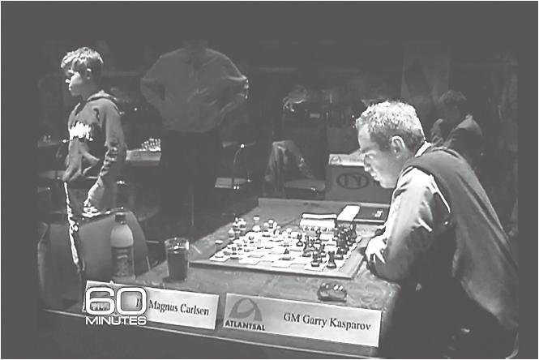
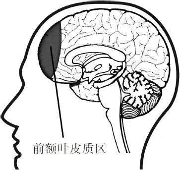
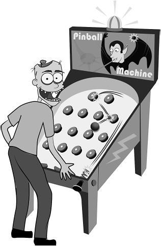
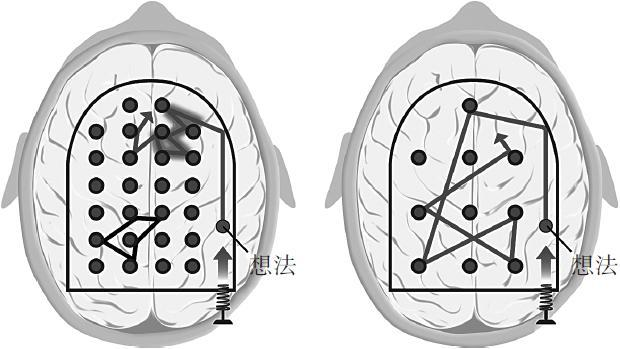
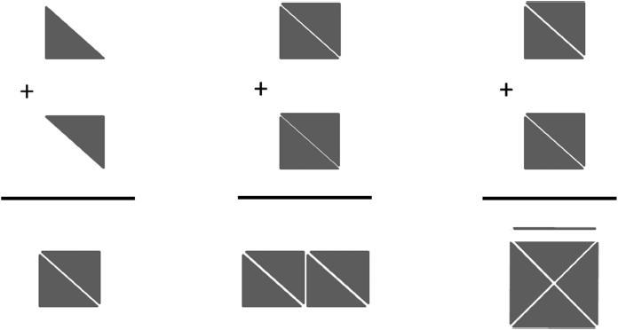
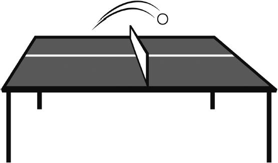
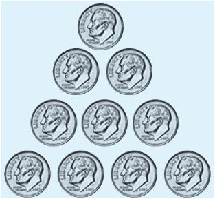

第2章 放松点
有时候太勤奋也是一种病
学习数学和科学是有诀窍的，如果你想了解其中最关键的奥秘，还得来看看下面这幅图。
图中右边的男人是传奇象棋大师加里·卡斯帕罗夫（Garry Kasparov），左边则是一个名叫马格努斯·卡尔森（Magnus Carlsen）的13岁男孩。他们正处于一场国际象棋比赛的快棋赛中，赛场时间紧迫，步步惊心，但卡尔森却离开棋盘，到一边晃悠去了。这几乎等同于在尼亚加拉大瀑布上空走着钢丝时，即兴来了个后空翻。
没错，卡尔森在用心理战术遏制对手。不出所料，乱了阵脚的卡斯帕罗夫与卡尔森打平，没能完胜这个年轻的棋场新人。卡尔森继而成为史上最年轻的顶级棋手，不过，天才的他此时正在做的，可不只是和经验老成的对手玩心理游戏。深入了解卡尔森的赛场策略，将有助于我们理解大脑是如何学习数学和科学的。在详细探究卡尔森如何从心理上战胜卡斯帕罗夫之前，我们先要了解几个有关人类思考方式的重要概念。（我保证，我们会回到卡尔森的故事。）

2004年，13岁的马格努斯·卡尔森（图左）与传奇天才加里·卡斯帕罗夫在“雷克雅未克快棋赛”赛场。卡斯帕罗夫已经难掩震惊之意。
在这一章，我们将接触到本书的部分核心主题。所以，如果你接下来需要在思维模式间来来回回地转换，也没必要大惊小怪。思维转换也就是指在透彻了解其中原委之前，先大致瞄一眼接下来要学的东西。这也是本书的核心思想之一！
该你试试了！
为思维加力
在你初读一本书的某个章节或某个部分，而且其中内容涉及数学或科学概念时，先宏观浏览一遍会比较好。不只是看表、公式或图片，还有小节标题、总结，甚至如果章节末尾有思考问题，最好也看看。这似乎有点反直觉——你还没有真正读过这一章呢。但它的确会为你的思维提供动力。现在就去快览这一章节，再看看章尾的问题吧。
你会惊讶地发现，用一两分钟预先翻阅，再开始深度阅读，会对思维的组织产生多大的帮助。你正在创造小小的神经挂钩，把思维挂靠上去，这会使把握概念变得更加轻松。
专注思维和发散思维
自21世纪初以来，神经学家就已经对大脑中两种思维网络模式间的互相切换取得了研究上的长足进步，即注意力高度集中的状态和更加放松的休息状态。[1]这两种思考状态基于不同的神经网络模型，我们将其分别称为专注模式（focused mode）和发散模式（diffuse mode），它们对学习都非常重要。[2]在我们的日常活动中，大脑会频繁地在两种模式之间不停切换。尽管在意识清醒的状态下，你也无法同时处于两种思维模式之中，不过，对有些你并不太关注的事情，发散模式确实可以悄悄地在后台处理。[3]有时候，你突然一恍神，那就是发散模式现身了。
专注模式下的思维活动对数学和科学的学习必不可少。它是利用理性、连贯、分解的途径直接解决问题的一种模式。专注模式与大脑前额叶皮层（位置就在脑门正后方）集中注意力的能力相关。[4]你把注意力集中到某样东西上，然后砰的一声，专注模式就开启了。你可以把它想象成手电筒发出的光，打开开关，富有穿透力的光柱就打在了你关注的目标上。

前额叶皮质区就是额头正后方的大脑区域
发散模式对学数学和科学也同样必不可少。如果我们在一个问题上挣扎了许久而不得思路，它会冷不防地提供一个新点悟。同时，它也与宏观视角相关联。当你放松注意力，任由思维漫步时，发散模式思维就出现了。松弛状态让大脑的不同区域得到相互联络的机会，并反馈给我们宝贵的灵感。与专注模式不同，发散模式看起来跟任何一个特定脑区的关系都不太密切，它更像是“弥散”于整个大脑之中。[5]通常，专注模式生成了初步思路之后，发散模式的灵感才源源涌现。（看来发散模式也难为无米之炊！）
学习过程中，不同脑区进行着复杂的神经元发放活动，同时两个大脑半球之间也发生着互动往来。[6]这说明学习活动可没那么简单，比在专注和发散模式间简单地切换要复杂多了。还好，在这里我们无须对生理机制做更深的了解，我们要另辟蹊径。
专注模式：一台排布紧凑的弹球机
要理解专注模式和发散模式，我们先来玩玩弹球游戏。（学习数学和科学，打比方的办法真是格外有效。）在那种老式弹球机上，你要拉下弹簧推杆，让推杆击打小球，把它送出去，小球就会随机在那些圆柱状的橡胶弹柱之间蹦来蹦去。

快乐的“小恶魔”正在玩神经弹球
看看下面这个例子吧。当你专注某个问题时，你的大脑就拉动了思维推杆，然后把一个想法弹送出去。“砰”，这个想法脱弦而出，像弹珠一样在下面左图中的大脑里横冲直撞。这就是思维活动中的专注模式。
你看，在专注模式里，那些橡胶弹柱排布得多紧凑啊。与之对比，在右图的发散模式中，弹柱之间就分散得多了。（如果你想让这个比喻更进一步，那么可以把每个弹柱看作一小簇神经元。）
专注模式中紧密排布的弹柱能让你更轻松地得到一个确切的想法。基本上可以这样说，专注模式是把精神集中于已在脑中形成紧密关联的事物上。启用专注模式，常常是因为已掌握的基础概念对于你而言既熟悉又轻松。如果仔细看专注模式那张图的上半部分，你就会发现，一部分路径更宽，显得更加“常来常往”。从这段更宽的路径可以看出，专注模式正在遵从你曾练习或经历过的老路子。
举个例子，如果你已经学会了乘法，那就可以用专注模式把数字相乘；或是在语言学习中，你想要更加熟练地掌握上周学过的西班牙语动词变位，可以用上专注模式。同样，在游泳时，你要练习降低身体位置，从而使前进的动作更加有力，也可以使用专注模式来分解你的蛙泳动作。
当你专注某件事物时，清醒专注的前额叶皮层就会自动沿着神经通路传递出信号。这些信号会奔向与你思考内容相关的各个脑区，将它们连接起来。这个过程有点像章鱼把触手伸向它周围的四面八方，去摆弄那些它正关注的东西。章鱼的触手数量是有限的，你的工作记忆也一样，它只能同时处理有限的事物。（我们之后会再详细讲述工作记忆。）

在脑力“弹球游戏”中，小球就代表了一个想法，它从弹簧推杆上飞出去，在成排的橡胶弹柱间发生随机碰撞。上图中的两个弹球机就分别代表了两种思考模式：专注模式（左图）和发散模式（右图）。专注模式意味着我们高度专注一个特定问题或者概念。但有些时候，你会无意中发现高度集中的思维却是南辕北辙：你忙着在脑中某处搜寻答案，而真正的答案还远在大脑的另一边呢。
就像左图中所画的那样，你的“思维小球”在图片上方弹来弹去，与整张图的下半部分遥不可及。的确，思维小球途经的上半部分，有着宽阔的路径。因为你曾经有过类似的思考，走过这条老路。下半部分则是全新的思维，还从未被踏足。
而右图中的发散模式则容纳了更为开阔的全局视野。如果你要学点新东西，这种思维模式就会助你一臂之力。正如图中所示，发散思维让你无法专注解决某个特定问题，但它可以让你离解决办法更近一步，因为在到达任何一个“弹柱”之前，你的想法都经历了一场长途跋涉。
通常，你首先会将一个问题逐词逐句地注入大脑，比如读书或查阅课堂笔记。你的思维触手就会激活专注模式。在专心揣摩问题之初，你的思维是集中而狭隘的，小球只会经过挨在一起的弹柱，循规蹈矩地走那些你已经熟悉的路径。你的思想轻易地在根深蒂固的思维模式中乱窜，急于快速抓住一个解决方案。然而，在数学和科学问题中，往往一个极小的变动就会使问题截然不同，这就带来了更大的困难。
为什么数学和科学知识会更难对付
利用专注思维模式来处理数学和科学问题，通常会比处理语言和人际交往相关问题费劲得多。[7]这也许是因为上千年来，人类操控数学概念的能力并没有进化，并且数学概念往往比传统语言问题更加抽象隐晦。[8]显然，我们还是可以思考数学和科学的难题，它只是在抽象和隐晦的程度上更高一筹。好吧，有时候那复杂程度可不止高出一点。
抽象是指什么？这样说吧，你可以指着一头正在草原上反刍的活牛，然后把它和纸上的“牛”字等同起来。但你没办法找到一个活的加号来理解“+”的意思，因为加号背后的概念更加抽象。至于隐晦，我是指一个符号可以代表不止一种的运算或概念，就像乘号可以代表重复相加。回到我们那个弹球的类比，数学的抽象性和隐晦性会让橡胶弹柱变得软绵绵，你需要额外练习才能增加它们的硬度，这样才能让小球恰到好处地弹出去。这就是为什么克服拖延对学习数学和科学格外重要（当然，这对学什么都很重要）。我们之后会再讲这一点。
还有另外一个挑战与数学、科学难题相关，它就是思维的定式效应（类似一叶障目）。在这种效应里，你脑海中已有的，或是最初的想法，会阻碍你产生更好的想法或答案。[9]我们在专注模式的弹球图片里看到过，其中思维弹球最初的走向是图中大脑的上半部分，但是解决问题的办法实际却在图中偏下的部位。［定式（einstellung）一词原为德语，意思是“装置”，基本上你可以理解为先入为主的概念，它会变成未来思维旅途上“装置”好的路障。］
在科学领域中，人们很容易陷入这种错误的思考方式，因为你经常会被直觉误导。在学习新东西的时候，你必须得让错误的旧观点“改过自新”。[10]
定式效应往往会成为学生的绊脚石。需要得到再训练的不只是你的自身直觉——更不用说你在做作业的时候，有时甚至连找到头绪都难上加难。思维小球费力地撞来撞去，却总是离正确答案很远——因为在专注模式下，拥挤的橡胶弹柱阻碍了你的思维飞跃到新的位置，而那里可能才是答案所在。
这就是学数学和科学的学生常犯的一个显著错误：还没学会走就开始跑。[11]换句话说，他们没读教材，没上课，没看在线课程，甚至都没问过那些会的人，就开始盲目地做作业了。这种行为简直是自暴自弃。这跟闭着眼睛不看答案在哪儿，就随机拉下推杆弹出小球有什么区别呢？
了解如何获得真正的解决办法非常重要，不仅对数学和科学问题是如此，生活中亦然。比如，稍微做些研究，稍微多一点自我认知或是自我验证，都能让你离那些靠伪造的科学依据来打广告的产品远一点，免得钱包空空，甚至连健康都赔了进去。[12]储备点数学的相关知识，还能帮你避免拖欠贷款——欠款不还可绝对是人生中的一段黑历史。[13]
发散模式：一台间距松散的弹球机
回想一下几页之前，那张代表发散模式的弹球机插图里，橡胶缓冲器彼此遥遥相望。这种思维模式会让大脑以开阔得多的视野俯瞰世界，每一个想法在两个缓冲器之间的旅程都要更遥远，对吧？它把相距甚远的节点连接在一起——也就是说，你可以从一个想法嗖地飞到另一个看似无关的想法上去。（当然，用这种模式，你就别指望可以思考什么精确复杂的问题了。）
如果你正纠缠于一个全新的概念，或是要解决一个陌生的问题，预先并不存在神经模式为你铺路搭桥，甚至连个指出大概方向的路标都没有。那你就必须深入更广阔的疆域以寻求潜在的解决方案。而发散模式就是这次历险的通行证。
还有另外一种直观的方式来看待专注模式和发散模式之间的区别：想象从手电筒里打出来的光。专注模式下的光束更紧密，穿透力更强，径直打在一小块区域上。而如果你拨到发散模式，光柱会分散开，照亮的范围更广，但各处的光强都会降低。
如果你想要理解新事物，那最好关掉精确的专注思考模式，把开关切换到“广角光源”，直到你锁定了一个新的、更有成效的方法。如接下来要看到，发散模式有其自由意志，它可不会听话地被打开或是关闭。不过没关系，我们很快就会讲到帮你在两种模式之间切换的小技巧了。
有悖直觉的创造力
了解到发散模式后，我逐渐开始在日常生活中注意到它了。例如，比起枯坐在桌前绞尽脑汁，我发现自己随意发挥时写出的吉他曲更棒。那些刻意努力的作品往往充满陈词滥调，无聊透了。写论文、为学校项目想点子或是尝试解决一个困难的数学题也是一样的。现在我信奉这样的经验：你越是苦思冥想，得出的想法就越是味同嚼蜡。目前为止，我都觉得这条规律放之四海而皆准。所以说，努力工作时的放松也是一个重要环节，当然，更是令工作卓有成效的关键。
——肖恩·瓦塞尔（Shaun Wassell）
计算机工程新生
为什么要有两种思考模式
我们为什么要有这样两种思考方式？答案可能深藏于生物演化之中。脊椎动物如果想要生存下去并繁衍后代，就要面对两个主要问题。让我们用一只鸟来举例，一方面，它需要集中注意力才能从地面上啄取谷粒，获得食物；与此同时，它也必须警惕视野中是否有老鹰之类的天敌出现。处理这两种截然不同的任务，最好的方法是什么呢？当然是把它们区分对待。它可以让一个大脑半球集中注意力啄取食物，另一个则集中注意力在巡视周围环境的危险上。当两个大脑半球倾向于分别完成各自不同类型的任务时，生存下去的机会就更大了。[14]如果你观察鸟类，就会发现，它们先啄一下，然后停下来四处张望——看上去就像是不停地在专注模式和发散模式之间切换。
人类大脑的运转方式也相去不远。在某种程度上，我们大脑的左半球与慎重的、注意力高度集中的事项联系更紧密。它似乎也更擅长处理连贯性的、富于逻辑性的思考：上一步推导出下一步，诸如此类。而与大脑的右半球相关的，则更多是像四处扫视环境、与他人互动或是处理情绪之类的活动。[15]同时，应对即刻发生的活动或是宏观问题的处理也与大脑的右半球相关。[16]
从两个脑半球的细微区别上，我们可以了解到不同思维处理模式可能产生的原因。但请一定注意，“有的人是左脑主导的，有的人是右脑主导的”这种想法绝对是错误的。[17]

这幅图简易直观地展示了专注模式和发散模式的不同。如果给你两个三角形，要求你把它们拼成一个正方形，这非常容易，就像左图那样。但如果再给你两个三角形，让你把四个放在一起拼出一个正方形，你的第一反应会是错误地把它们拼成一个长方形，就像中间图示那样。这是因为你的大脑里已经有了专注模式下的模型，使你囿于成见。最右侧的图则展现了如何跳出固化的套路，用新的方式重新把四个三角形组成另外一个正方形。[18]
无论是专注模式，还是发散模式，都要求两个大脑半球同时参与。想要学习数学和科学，而且保持创造力，两种思维模式都会被用到，对它们的强化训练缺一不可。[19]
据证实，面对一个困难的问题时，我们必须先要用专注模式奋斗上一阵子，投入艰苦的努力。（对，我们从小学开始就这么干来着！）有趣的是，发散模式也常常是解决问题不可或缺的部分，尤其在题目艰涩难懂的时候。不过，只要我们有意识地处于集中状态下，发散模式就是被屏蔽的。

总要有来有往，才能打赢乒乓球
接纳困惑
困惑是学习过程中的有益部分。当学生在一个问题上百思不得其解时，就会觉得这不是他们擅长的学科，那些聪明的学生尤甚。他们在高中的学习顺风顺水，这让他们完全没法想象困惑是正常和必需的。但学习本来就是从困惑中摸索问题答案的过程，能够描述出来问题就已经成功了一半。只要发现了困扰你的东西是什么，那么你就离解答出来不远了。
——肯尼斯R.莱伯德（Kenneth R.Leopold）
明尼苏达大学化学系，杰出教学教授
归根结底，任何学科中问题的解决都离不开两种基础思维模式之间的相互切换。一种模式接收信息并进行处理，再将结果传给另一种。除了某些琐碎的小问题或概念，大脑要理解解决任何问题，都离不开这种信息之间的往来传递。[20]我们在这里提出的观点，对于理解学习数学和自然科学尤为重要。但你会逐渐发现，它们对语言、音乐或创意写作等许多领域也同样奏效。
该你试试了！
模式转换
下图是一个小小的认知练习，可以让你感受到专注模式到发散模式的转换过程。你能否只移动三个硬币就组成一个新的朝下的三角形呢？
如果你的大脑非常放松，没有把注意力锁定在任何事上，解决办法会轻而易举地浮现在眼前。

有些孩子立刻就完成了练习，可有些非常聪明的教授却百思不得其解，最终只好放弃。唤醒童心可以帮你解决这个问题。包括这项任务在内的所有“该你试试了”的答案都可以在书后注释中找到。
拖延的前奏
许多人都挣扎于拖延症。关于如何有效地处理拖延，我们会在本书后面的内容中详述。暂时我们只需要记住，如果拖延，你就没有时间供专注模式稳扎稳打，只够走马观花地过上一遍。这样也会增加你的压力，因为你清楚自己必须完成一个很讨厌的任务。其中的神经模型会变得模糊黯淡、残缺不全，你的思维基础七零八落、摇摇欲坠。这可不是个小问题，尤其对于数学和科学来说更是如此。假设你为了考试临阵磨枪，或者是想快速应付地写完作业，那就别指望能记牢概念，搞懂难题或者是建立知识结构图了。哪种神经模式都需要时间，可你根本就没有给自己留出余闲。
该你试试了！
心无旁骛，简而行之
如果你发现自己总是在拖延（不少人都有过同感），来看看这个。关掉手机，或是任何其他会发出提示音或闪烁的干扰源，用一个计时器设定25分钟，在这25分钟里，全神贯注于一项任务，什么任务都行。不用担心能不能完成它，专心去做就好。25分钟的时限一到，你就停下来奖励一下自己，看看网页，翻一下手机，做任何你想做的事情。注意，奖励和工作本身一样重要。你会惊讶于这25分钟的成效——尤其还是在你专注于任务本身，而非在意任务能否达成的情况下。（这就是所谓的番茄时间法，我们会在第6章里更详细地聊到它。）
如果你想试试这个方法的进阶版，那么来想象一下，假如现在就要入睡了，你正在回顾这一天中完成的最重要的任务。你想到的任务是哪个呢？把它写下来，现在就去做。在这天内，试着用至少3个25分钟（“番茄时间段”）来处理你能想到的最重要的一个或几个任务。
当日工作真正完结后，看看自己在待做清单上划掉了什么，这会儿就可以尽情地享受成就感了，然后把明天要做的关键事项写下来。这种前期准备有助于你的发散模式开始预热思考明天如何完成那些任务。
本章小结
·我们的大脑有两种截然不同的思维模式——专注模式和发散模式。你会在两种模式之间转换，择一而用。
·如果我们开始就用专注模式处理新的概念和陌生的问题，很容易止步不前。
·想要发掘新点子，解决问题，不仅需要最初的专注，接着也需要给注意力放个假，让它从眼前的问题上溜开一会儿。
·定式效应就是说因死盯着有瑕疵的方法不放，而在解决问题时陷入僵局。切换到发散模式可以帮助我们从中解脱出来。记住这一点，有时候你的思考得灵活点。想要解决问题，理解概念，你可能需要在不同的概念之间转换。最初的想法反而可能是误导。
驻足与回顾
合上书，不要偷看，想想本章有哪些主要思想？刚刚开始尝试时，如果复述不完整也没关系。只要持续练习这一技巧，总有一天，你会发现自己阅读和回顾的能力已经脱胎换骨。
学习提升
1.你怎么才能意识到自己处于发散模式中？那是一种什么感觉？
2.当你有意识地思考一个问题时，是哪种模式被激活了，哪种被屏蔽了呢？怎么才能解锁被屏蔽的模式呢？
3.回顾一下你处于定式效应的时候，怎样才能改变思考方式，跳出预设的错误概念？
4.解释一下专注模式和发散模式是怎样类比手电筒的可调光束的。何时才能看得更远？何时视野更开阔，但看到的距离更近？
5.为什么有时候对于学数学和科学的人来说，克服拖延症格外困难？
跳出困境：经济学大四学生纳迪娅·诺-梅希迪的领悟
我高二的时候选修了微积分1，那简直是一场噩梦。它和我之前学过的东西有天壤之别，根本无从着手。我花了更多的时间，下了更多的工夫。然而无论做多少练习，在图书馆待多久，还是收效甚微，最后只能指望着靠死记硬背逃过一劫。不用说，我的大学预修课程考试就是一团糟。
之后的两年里，我都躲着数学。但是大二的时候，我又修了一次微积分1，这次我拿了4.0。我不觉得在这两年里，自己一下子就变聪明了，但是我的学习方法彻底改变了。
高中的时候，我被困在了专注模式的思维方式里。（没错就是思维定式！）那时我觉得只要反复用相同的方式尝试，总会奏效。
现在我会为学生提供数学和经济学方面的个别指导。他们的问题就是通常把自己困在了原地，盯着细节不放。想要在其中找到解决方案，而非理解问题本身。我觉得你没法教人如何思考，那要靠个人摸索。但想要理解那些乍看上去复杂的、令人迷惑的概念，我倒是有几点建议。
1.我会觉得阅读比听别人讲更好理解，所以我从来都会读教材。我会先快速翻阅，了解这一章大概在说什么，然后再去读细节。每一个章节我都会读上几遍，只是不按顺序而已。
2.如果读过书之后还是弄不清楚到底怎么回事，我会去谷歌搜索或者去看YouTube视频。这不是说书本或教授讲得不透彻，而是有时对概念稍有不同的表达阐释，可以让你的思维换个角度看待问题，从而激发思维的火花。
3.我开车时思维最清晰。有时我会休息一下，开车出去兜兜风，这个办法屡试不爽！我总是得忙点什么，因为如果仅仅是坐在那里苦思冥想，我很快就会因为无聊而走神了。
[1] 静息模式讨论：Andrews-Hanna 2012；Raichle and Snyder 2007；Takeuchi et al.2011。关于放松状态更广泛的探讨：Moussa et al.2012.在另外一系列研究中，Bruce Mangan注意到William James关于边缘意识的描述包含如下特点：“存在一种‘额外的’意识，例如短暂但频繁浮现出来的潜意识，平时它是被意识的核心所压制的”（Cook 2002，p.237；Mangan 1993）。
[2] Immordino-Yang et al.2012.
[3] Edward de Bono是创意学习的大师，他所采用的“竖直”（vertical）和“侧面”（lateral）类似我所使用的“专注”和“发散”（de Bono 1970）。敏锐的读者也许会发现，我曾提到过，当专注模式被激活时，有时发散模式仍然会在后台运作。然而研究显示，如静息状态（放松状态下的一种神经模式）等，在专注模式被激活时并不运作。事实到底是怎样的呢？作为一名教育工作者，同时也是学习者，我个人认为，当专注模式启动后，仍然有部分非专注性的任务可以在后台继续工作，只要专注模式不占用该脑区即可。某种程度上，我所使用的名词“发散模式”也许正是意味着“不那么专注的学习活动模式”，而非简单的“静息状态”。
[4] 即使是大脑中相距略远的节点间也会有一些联结，这一点在之后的注意力章鱼部分会详细谈到。
[5] 发散模式也许会用到前额叶区域，但它弥散性分布的联结更多，而且对看似无关的联结滤过性更弱。
[6] 心理学家诺曼·库克曾提出过假设，认为人类心理学中心理论的第一要素为：①大脑左右半球之间的信息流；②支配性区域（左半球）和语言交流辅助影响机制间的信息互换（Cook 1989，p.15）。但仍要注意的是，大脑半球间的差异曾被用于得出无数毫无真实性的过度解读和愚蠢的结论（Efron 1990）。
[7] 根据2012年的全美学生参与度调查，工程学学生花在学习上的时间最多。四年级的工程学学生平均每周花18个小时，同年级教育学学生的平均时间是15个小时，而商科学生则是14个小时。《纽约时报》上的一篇文章题目是“为什么科学专业改变他们的大脑（那东西难得吓人）”，退休的工程学名誉教授戴维E.古德伯格强调，高强度的微积分，以及物理学和化学学习需求会启动“数学-科学死亡行军”，会不断淘汰学生（Drew 2011）。
[8] 关于数学思维演变的讨论，可以看Geary 2005，chap.6.当然，许多简写的术语和数学没关系。然而，却有惊人数量的这些简写符号和情绪相关。我们虽然不能亲眼看到这些术语，但我们可以感知它们，至少可以感知它们的重要方面。《符号生物》（The Symbolic Species）的作者特伦斯·迪肯强调了数学中加密和解密问题的固有复杂性：回想一下你第一次遇到某种全新的数学概念，例如递归减法（也就是除法）。通常情况下，这个概念的教法都是让孩子记住一套数字和符号的运算法则，然后利用这些法则一遍一遍地计算不同的数字，以期望他们可以“看出”这些对应的确切物理关系。学习过程最初要靠死记硬背（用我的话说就是“索引学习过程”），当他们可以漫不经心地完成这些任务，我们会希望他们能够看出这些运算和物理世界中发生的过程有什么关系。在某种程度上，如果进展顺利，孩子会“了解”符号和公式“背后”的共同点。于是，他们会根据更高级的记忆法——关于组合优化的可能性与他们所运算事物间的抽象联系，重新组织他们死记硬背下的知识。这一抽象化过程对于许多孩子来说非常困难。但是要考虑到，如果想要理解微积分，这一过程，甚至是对更抽象概念的理解都必不可少。微分就是递归除法，积分就是递归乘法，每种无限算下去的计算，都可以得到无穷小的数值（这是有可能的，因为它们是收敛的，可以推断而得，而非直接观察）。这种投射出无限算式细节的能力，解决了奇诺悖论，它通过描述看是根本不可能的。但问题不仅如此，（我们今天使用的）莱布尼茨的形式主义将无限递归缩减为一个单独的符号（或是说“积分符号”），因为一个人不可能永远运算下去。这使得微积分的符号计算与物理现实之间的联系更难以形象化。因此，用计算方式表达的构成实际上是双重加密的。是的，我们大脑演化出的是处理物理事物的能力，所以对此当然会觉得很难。而数学是一种“加密形式”，不止是在表达方式上，解密本质上也是个艰难的过程，因为它呈现出的组合困难。这就是为什么加密能使人难以重获沟通中的引用内容。我想表达的是“这就是数学的本质”，与我们演化出的能力并不相关。出于相同的原因，解密编码信息也一样困难。令我惊讶的是，我们明明都知道数学方程是加密了的信息，你要知道秘钥才能解开编码，了解它在说什么。可我们还在疑惑为何高等数学很难教，并将其归咎于教育系统和糟糕的教师。在我看来，这和归咎于能力演化的做法并无二致。（与作者的私下交流，July 11，2013。）
[9] Bilali et al.2008.
[10] Geary 2011。还可以参考里程碑式的文献《私人宇宙》（A Private Universe），可以在这里找到资源http://www.learner.org/resources/series28.html？pop=yes&pid=9，它引发了很多关于“科学理解上的误解”的研究。
[11] Alan Schoenfeld在1992年的研究曾收集了“超过100份大学和高中学生做不熟悉的练习题的录像，其中大约60%的人的解决方式都是‘阅读，快速做决定，管它行不行得通’”。你可以把它视为专注模式最糟糕的情况。
[12] Goldacre 2010.
[13] Gerardi et al.2013.
[14] 大脑不同半球之间的区别有时意义重大，但再强调一次，在这一领域做出任何论断都应该格外谨慎。诺曼·库克曾有过精妙的表述：“20世纪70年代的许多探讨都与事实相去甚远，大脑两个半球间的差异突然之间被用于解释人类心理学的所有难题，包括潜意识、创造力和精神分裂，然而接下来不可避免的强烈反对也同样夸大其词（Cook 2002，p.9）。”
[15] Demaree et al.2005；Gainotti 2012.
[16] McGilchrist 2010；Mihov et al.2010.
[17] Nielsen et al.2013.
[18] 德·波诺（De Bono）在1970年为这一问题提出了一种新的解决方式，也为我们此处列出的问题提供了灵感。德·波诺的经典著作中包含大量极富洞见的问题，非常值得一读。
[19] Immordino-Yang et al.2012.
[20] 我提到了专注模式和发散模式之间的往来互动，似乎大脑两个半球之间也有着类似的交互作用。我们可以从对鸡的研究中，一窥两个大脑半球间信息是如何往来流动的。学会不要啄苦珠子需要大脑两个半球之间记忆痕迹复杂的反复联动，更要花上数个小时（Güntürkün 2003）。安可·博马观察到，“对于一项特定任务，我们观察到某一侧的偏重，并不意味着这一侧半球就在整个任务进程中都处于主导地位”。有证据显示，在某一阶段，也许是右半球为主导，而在另一个阶段则切换到左半球占主导地位。对于某一项特定任务，不同阶段的相对难度也许决定了哪个半球占据主导地位”（Bouma 1990，p.86）。